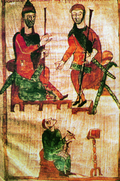
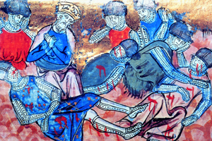

Lezione 7  Sacro romano impero
Sacro romano impero

-
180
205
-
240
150
-
180
175
-
215
190
-
250
320
-
195
290
-
110
370
-
140
390

CARLO MAGNO
768: Carlo Magno, il figlio di Pipino, diventa re dei franchi. Carlo Magno dà un grande impulso alla fioritura delle scienze, delle arti e del diritto, che impiega come strumenti per rafforzare la propria autorità: in questa miniatura del IX secolo lo vediamo insieme al figlio Pipino mentre detta un editto ad uno scriba.
RONCISVALLE
La battaglia di Roncisvalle, combattuta nel 778, ha un grande impatto sulla cultura medievale: le gesta dei paladini di Carlo Magno diventano il soggetto di molti poemi epici noti come chanson de geste. In questa miniatura francese trecentesca vediamo re Carlo che piange la morte del più valoroso dei suoi cavalieri, il conte Rolando.POITIERS
732: Carlo Martello blocca l’avanzata degli arabi a Poitiers. Nasce il sistema feudale nel regno dei franchi.PIPINO IL BREVE
Pipino il Breve succede a Carlo Martello. Finisce la dinastia dei Merovingi e inizia la quella dei re Carolingi. Con Pipino la regalità acquisisce un valore sacrale oltre che politico-militare.ROMA
755-756: Pipino, chiamato dal papa, scende in Italia e sconfigge i longobardi che minacciano Roma. Con un atto solenne dona alla Chiesa alcuni territori conquistati ai longobardi. Con questo gesto Pipino dimostra la sua lealtà alla Chiesa romana e viene nominato “patrizio dei romani”, il papa diventa, oltre che autorità spirituale, sovrano di uno Stato che ha delle terre e dei sudditi. È la nascita del potere temporale (politico) della Chiesa.LONGOBARDI
774: Carlo Magno sconfigge la monarchia longobarda e annette il Regno d’Italia ai propri possedimenti.SASSONIA
780-804: vittoria di Carlo Magno contro i sassoni e annessione dei loro territori all’Impero.AVARI
795-796: Carlo Magno sconfigge gli avari.